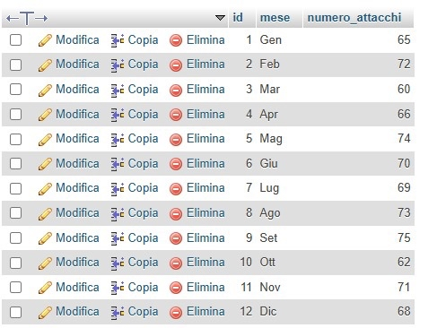
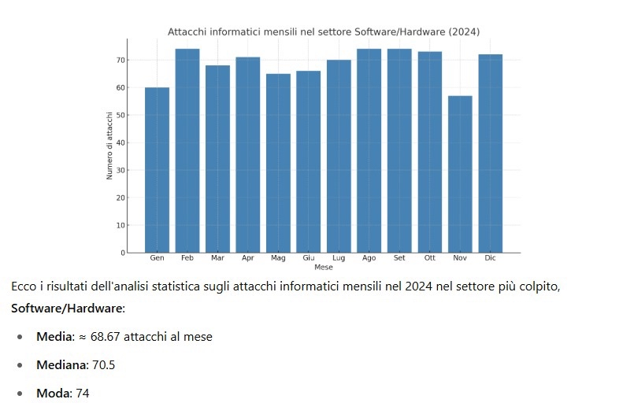
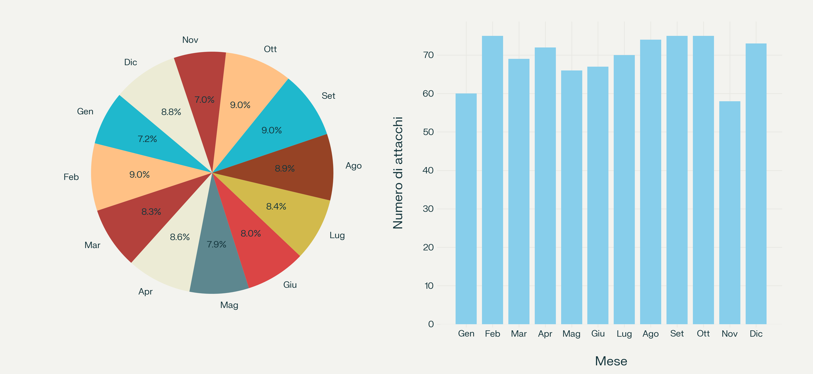

Benvenuto
Questo è il mio portfolio scolastico dove presento il mio percorso e i progetti realizzati durante gli studi.
Chi Sono
Ciao! Sono Roberto Salsano, studente appassionato di informatica.
I miei interessi:
- Sviluppo software e programmazione
- Tecnologie emergenti
- Sport e attività fisica
- Miglioramento continuo
Progetti Scolastici
Qui troverai i progetti che ho realizzato durante il mio percorso formativo.
Progetto Sicurezza Informatica 2024
Database per il monitoraggio degli attacchi hardware:
-- Crea il database
CREATE DATABASE IF NOT EXISTS SicurezzaInformatica2024;
-- Usa il database
USE SicurezzaInformatica2024;
-- Crea la tabella
CREATE TABLE Attacchi_Hardware_2024 (
id INT AUTO_INCREMENT PRIMARY KEY,
mese VARCHAR(10),
numero_attacchi INT
);
Analisi Cybersecurity 2024
Tipi di Grafici per l'Analisi Dati
Grafico a Torta
Caratteristiche principali:
- È composto da un cerchio suddiviso in spicchi, ognuno dei quali rappresenta una categoria o una classe
- La dimensione di ogni spicchio è proporzionale alla frequenza relativa (o percentuale) della categoria che rappresenta
- La somma di tutti gli angoli degli spicchi è 360°, che rappresenta il 100% del totale
Come si costruisce:
- Si calcolano le frequenze relative (percentuali) di ciascuna categoria
- Ogni percentuale viene convertita in gradi usando la proporzione:
gradi = (percentuale × 360) / 100 - Si disegna un cerchio e si tracciano gli spicchi con gli angoli calcolati
Grafico a Barre
Caratteristiche principali:
- Ogni barra rappresenta una categoria
- L'altezza della barra è proporzionale alla frequenza assoluta, relativa o percentuale della categoria
- Le barre sono separate tra loro, proprio per evidenziare che si tratta di dati discreti (cioè non continui)
Come si legge:
- Asse orizzontale (x): riporta le categorie o classi (es. tipi di frutta, voti, colori...)
- Asse verticale (y): indica la frequenza o valore numerico associato a ciascuna categoria
- Per leggere il grafico, basta osservare l'altezza di ciascuna barra e confrontarla con la scala sull'asse y
Analisi Statistiche e Grafici
Codice Python per generare statistiche e grafici sugli attacchi informatici mensili nel settore Software/Hardware:
import matplotlib.pyplot as plt
import statistics
import random
# Simulazione: attacchi mensili nel 2024 nel settore Software/Hardware
attacchi_mensili = [random.randint(55, 75) for _ in range(12)]
# Calcoli statistici
media = statistics.mean(attacchi_mensili)
mediana = statistics.median(attacchi_mensili)
try:
moda = statistics.mode(attacchi_mensili)
except statistics.StatisticsError:
moda = "Nessuna moda (tutti i valori unici o multimodali)"
print(f"Media: {media:.2f}")
print(f"Mediana: {mediana}")
print(f"Moda: {moda}")
# Nomi dei mesi
mesi = [
"Gen", "Feb", "Mar", "Apr", "Mag", "Giu",
"Lug", "Ago", "Set", "Ott", "Nov", "Dic"
]
# Grafico a barre
plt.figure(figsize=(10, 6))
plt.bar(mesi, attacchi_mensili, color='steelblue')
plt.title("Attacchi informatici mensili - Settore Software/Hardware (2024)")
plt.xlabel("Mese")
plt.ylabel("Numero di attacchi")
plt.grid(axis='y', linestyle='--', alpha=0.7)
plt.tight_layout()
plt.show()
Risultati simulati:
Media: 64.25
Mediana: 64.5
Moda: 68

Conclusione
Gli attacchi informatici ai settori hardware e software hanno causato danni economici significativi alle aziende italiane nel 2024, con costi diretti elevati e impatti negativi sulla reputazione e sul valore di mercato. È fondamentale che le imprese investano in misure di sicurezza informatica robuste e aggiornate per mitigare questi rischi.
Questi strumenti lavorano insieme per:
- Ridurre la superficie d'attacco
- Rilevare e fermare gli attacchi prima che si diffondano
- Dare agli amministratori visibilità e controllo
DES (Data Encryption Standard)
Cos'è il DES?
Il DES è un algoritmo di cifratura simmetrica a blocchi, sviluppato negli anni '70, usato per cifrare e decifrare dati. È "simmetrico" perché usa la stessa chiave per cifrare e decifrare.
Caratteristiche principali del DES
| Caratteristica | Valore |
|---|---|
| Tipo | Cifratura simmetrica a blocchi |
| Lunghezza blocco | 64 bit |
| Lunghezza chiave | 56 bit effettivi (più 8 bit di parità = 64 bit totali) |
| Numero di round | 16 |
| Modalità | Elettronica (ECB, CBC, ecc.) |
Funzionamento passo-passo
1. Input del DES
Messaggio in chiaro di 64 bit (diviso in blocchi se il messaggio è lungo).
Chiave di 64 bit, di cui solo 56 sono effettivi.
2. Permutazione iniziale (IP)
Si applica una permutazione fissa ai 64 bit del messaggio. Non cambia il contenuto, solo l'ordine dei bit.
3. Dividi il blocco
Il blocco è diviso in due parti:
- L0 = primi 32 bit
- R0 = ultimi 32 bit
4. 16 Round Feistel
Dopo 16 round, si scambiano L e R e si applica la permutazione inversa (IP⁻¹).
Si ottiene così il blocco cifrato di 64 bit.
In sintesi:
Messaggio (64 bit)
↓
Permutazione iniziale (IP)
↓
Dividi in L0 e R0
↓
16 Round Feistel (con sottochiavi K1...K16)
↓
Swap (L16, R16)
↓
Permutazione Inversa (IP⁻¹)
↓
Blocco cifrato (64 bit)
In ambito TPSIT
Nel contesto scolastico TPSIT, il DES viene studiato per:
- Capire come funziona la crittografia simmetrica
- Analizzare un algoritmo a blocchi con una struttura Feistel
- Approfondire le tecniche di cifratura/decifratura
- Vedere esempi pratici (magari con codice in C, Java o Python)
Vantaggi e Svantaggi
| Vantaggi | Svantaggi |
|---|---|
|
|
Digital Security (Informatica & Inglese)
La sicurezza digitale, o digital security, è l'insieme di pratiche, strumenti e tecnologie utilizzati per proteggere dati, dispositivi e reti informatiche da accessi non autorizzati, attacchi informatici e perdita di informazioni.
Nel mondo dell'informatica, la sicurezza digitale è fondamentale per garantire che:
- I dati personali (personal data) siano protetti
- Le reti (networks) siano sicure
- I sistemi operativi (operating systems) non vengano compromessi
- Le informazioni sensibili (sensitive information) non vengano rubate o danneggiate
Minacce comuni (Common Threats):
- Malware: software dannoso come virus o trojan
- Phishing: tecniche per rubare dati tramite e-mail false
- Hacking: accessi non autorizzati a sistemi
- Data breach: perdita o furto di dati
Esempio in inglese:
"Phishing is a common attack where cybercriminals trick users into giving away sensitive information such as passwords or credit card numbers."
Strumenti di protezione (Protection Tools):
- Antivirus software
- Firewalls
- Encryption (crittografia)
- Multi-factor authentication (MFA)
Esempio in inglese:
"Using strong passwords and enabling multi-factor authentication helps keep your accounts secure."
Importanza dell'inglese in informatica:
Nel campo dell'informatica, molte parole tecniche derivano direttamente dall'inglese. Conoscere il lessico in inglese è importante perché:
- La maggior parte della documentazione tecnica è in inglese
- I professionisti IT lavorano spesso in ambienti internazionali
- I comandi, le impostazioni dei software e le guide di sicurezza sono quasi sempre in inglese
Conclusione:
La sicurezza digitale è essenziale per vivere e lavorare nel mondo digitale in modo protetto. Conoscere la terminologia in inglese permette di accedere a risorse globali e di comprendere meglio le minacce e le soluzioni in ambito informatico.
La capra di Umberto Saba (1911)
Ho parlato a una capra.
Era sola sul prato, era legata.
Sazia d'erba, bagnata
alla pioggia, belava.
Quell'urlo è fratello
all'urlo eterno che esprime
ciò che non cambia:
il dolore.
Spiegazione della poesia
La poesia è breve ma intensa, e carica di significati universali e simbolici.
1. Inizio semplice e concreto
"Ho parlato a una capra."
Saba inizia con un gesto banale, ma profondo: parla a un animale.
Non è una scena bucolica, ma triste: la capra è sola e legata.
2. L'immagine della capra
"Era sola sul prato, era legata."
La capra rappresenta l'essere vivente indifeso.
È prigioniera e sottomessa, come lo è l'uomo nel dolore.
3. Il belato e il dolore
"belava."
Il verso della capra diventa simbolo del dolore umano.
È un urlo di sofferenza, senza parole, ma universale.
4. Il messaggio universale
"Quell'urlo è fratello all'urlo eterno [...] il dolore."
Saba riconosce nel lamento dell'animale lo stesso dolore che prova l'umanità.
Il dolore è eterno e uguale per tutti: uomini, animali, individui soli o popoli interi.
Collegamento con la Seconda Guerra Mondiale
Sebbene la poesia sia scritta nel 1911, anticipa un sentimento che sarà fortissimo negli anni della Seconda Guerra Mondiale.
1. Sofferenza universale
La guerra ha portato dolore, prigionia, fame, morte, come il belato della capra: un grido senza voce che accomuna i sofferenti.
2. Empatia verso i deboli
Come Saba ha compassione per la capra, così durante e dopo la guerra molti intellettuali si sono chiesti come dare voce alle vittime mute, agli emarginati, ai perseguitati (pensiamo ai campi di concentramento).
3. Saba e l'ebraismo
Umberto Saba era di origine ebraica. Durante il periodo fascista e la guerra, fu costretto a nascondersi per sfuggire alle leggi razziali.